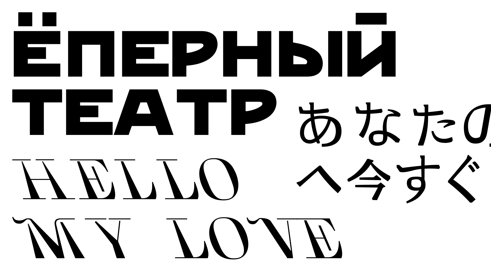

Лекция: Для чего нужны другие шрифты если есть Times New Roman?
История шрифта
Шрифтовая история и классификация — Паратайп
Эволюция шрифта — Денис Машаров про историю и классификацию антикв. Часть 1. Зарождение
Эволюция шрифта — Денис Машаров про историю и классификацию антикв. Часть 2. Классицистические
Эволюция гротесков — Денис Машаров про историю шрифта и типографики. Часть 1 (4)
Эволюция гротесков. Часть 2 (5) — Денис Машаров про классификацию и сочетания шрифтов. Финальная
История шрифта (Михаил Воронин)
Выбор шрифта
Шрифтовая история и классификация — Паратайп
Кириллица в Google Fonts: неогротески — TypeToday
Кириллица в Google Fonts: гуманистические гротески — TypeToday
https://type.today/ru/journal/geo — TypeToday
Выбор шрифта
Живая типографика — Александра Королькова
Лучший
Шрифт NT Somic